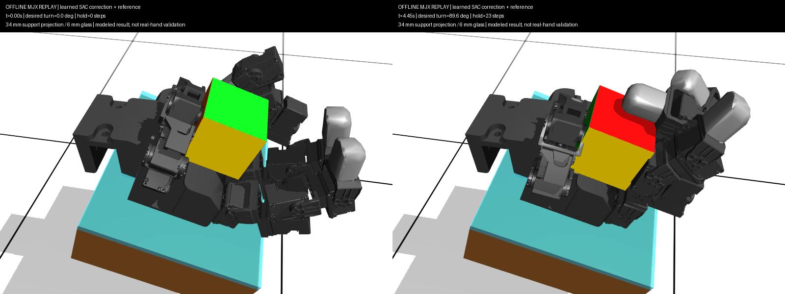
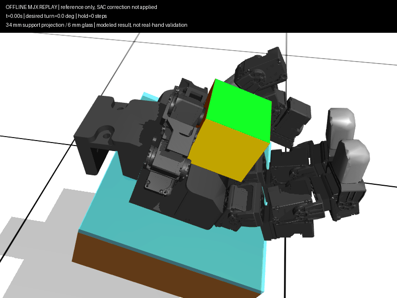

저장 결과 재생 · 모터 연결 없음
한 방향 약 90° 회전 — SAC 보정 + 기준 동작
초록색 윗면이 빨간색 윗면으로 바뀌는 시뮬레이션이다. 아래 GIF는 자동 반복된다.
GIF 파일 열기 · 시작 / 종료 이미지 열기
기존 학습 결과를 재생하는 화면이다. 실시간 시뮬레이터나 실물 성공 영상이 아니다.
실물 관절 응답 보정 전 모델이며, 최근 수정 경로가 검증을 통과했다는 의미도 아니다.
| 항목 | 이 영상의 조건 |
|---|
| 방식 | MuJoCo/MJX, 기준 궤적 + 학습된 SAC 보정 |
| 학습 | 20,000 timesteps (에피소드 수와 다름) |
| 표시한 사례 | 시뮬레이션 시간 약 4.45초, 회전 약 89.56°, 목표 자세 오차 약 0.45° |
| 저장된 평가 | 해당 제한된 10개 평가 사례에서 10회 성공. 실물 성공률이 아님 |
| 모델 조건 | 큐브 54.5mm / 100g, 받침 돌출 34mm / 유리 두께 6mm |
| 현재 실물과의 차이 | 사용자 정정 큐브는 55mm. 실물 응답·카메라 오차·가림 대응은 별도 검증 필요 |
| 제어 주기 | 50ms / 20Hz. 최신 2학기 PPT의 제어 주기와 같으며 실물 지연은 별도 측정 대상 |
시작과 종료

비교: SAC 보정 없이 기준 동작만 재생한 영상
아래는 기준 동작만 사용한 별도 결과다. 위의 SAC 보정 결과와 구분한다.

발표자료 기준 최종 목표
최신 2학기 PPT: 오른손은 큐브 본체를 지지하며 목표 면이 위를 향하도록 리셋 없이 연속 재배향하고, 왼손은 상단 레이어를 파지·회전한다. 양손 협조 및 전체 솔빙은 향후 통합 대상이다.
목표 면 기울기 0.15rad 미만·위치 오차 15mm 미만을 1초 유지하면 성공으로 판정하고 다음 목표로 넘어간다.
이 영상은 오른손의 한 방향 회전 요소 검증이다. 연속 목표·실물 동작·양손 통합 완료를 보여주는 영상은 아니다. 영상의 전체 자세 오차와 목표 면 기울기는 별도 지표다.
근거: 캡스톤2 중간발표자료_v2 슬라이드11·13–16·23 / sac_forward_support_reference_v1_20k의 settings.json, result.json, supported_batch_eval.json 및 sac_reference_render.py.